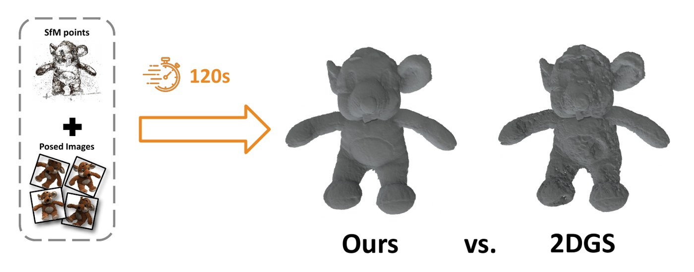
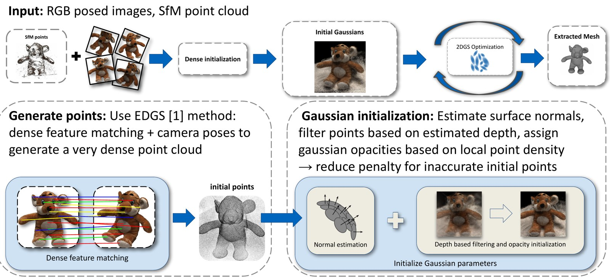
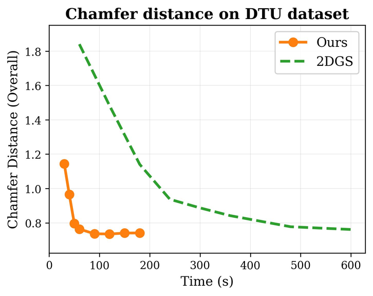
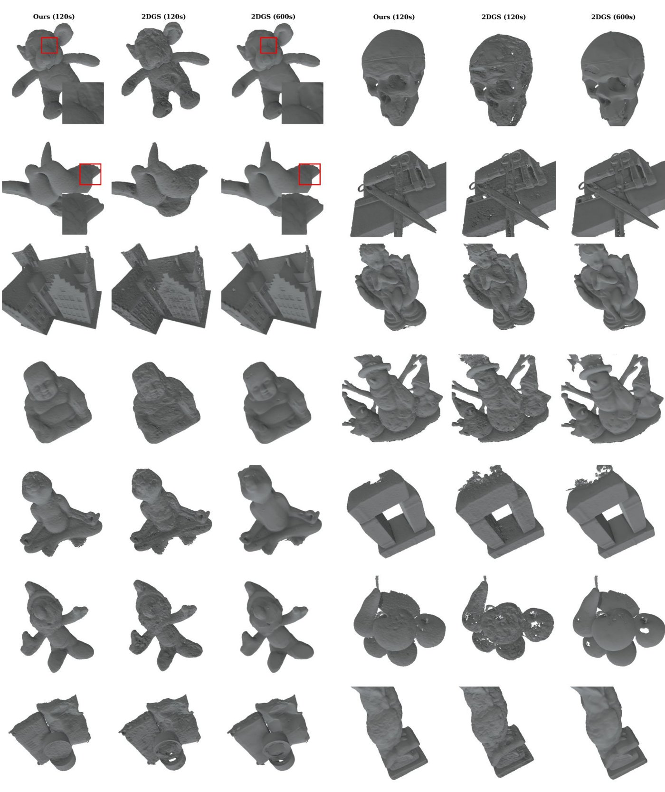

Instant Surface Reconstruction
Dense initialization for 2D Gaussian Splatting
Supervised by Lukas Höllein · TUM Visual Computing & AI Lab · ADL4CV project

Abstract
2D Gaussian Splatting (2DGS) gives high-quality surface reconstruction, but starts from a sparse SfM point cloud and relies on slow, reactive densification. We replace this with a dense initialization inspired by EDGS, enhanced with estimated surface normals and depth filtering. On DTU, our approach matches the accuracy of fully trained 2DGS in under 2 minutes of training, a 5–10× speedup.
Method

Dense feature matches are triangulated into a dense point cloud. Each point becomes a 2D Gaussian aligned to its estimated surface normal; depth filtering and density-based opacity suppress outliers. Standard 2DGS optimization then refines the surfels, and the mesh is extracted by TSDF fusion.
2DGS: Huang et al., SIGGRAPH 2024 ·
project page ·
arXiv
EDGS: Kotovenko et al., 2025 ·
project page ·
arXiv
Results
We evaluate on the standard 15-scan subset of the DTU multi-view dataset: single objects (toys, statues, a skull, a building model, fruit) on a table, each captured from 49–64 calibrated views with a ground-truth structured-light scan. Meshes are scored by Chamfer distance to that scan.

0.74 mm in 2 min
Mean Chamfer distance on DTU. Fully trained 2DGS needs 15 min for the same accuracy.
| Method | 24 | 37 | 40 | 55 | 63 | 65 | 69 | 83 | 97 | 105 | 106 | 110 | 114 | 118 | 122 | Mean | Time |
|---|---|---|---|---|---|---|---|---|---|---|---|---|---|---|---|---|---|
| 3DGS | 2.14 | 1.53 | 2.08 | 1.68 | 3.49 | 2.21 | 1.43 | 2.07 | 2.22 | 1.75 | 1.79 | 2.55 | 1.53 | 1.52 | 1.50 | 1.97 | 15 min |
| SuGaR | 1.47 | 1.33 | 1.13 | 0.61 | 2.25 | 1.71 | 1.15 | 1.63 | 1.62 | 1.07 | 0.79 | 2.45 | 0.98 | 0.88 | 0.79 | 1.32 | 1 h |
| 2DGS | 0.46 | 0.80 | 0.33 | 0.37 | 0.95 | 0.86 | 0.80 | 1.25 | 1.24 | 0.67 | 0.67 | 1.24 | 0.39 | 0.64 | 0.47 | 0.74 | 15 min |
| 2DGS* | 1.38 | 1.26 | 1.41 | 0.93 | 2.63 | 2.14 | 1.25 | 1.71 | 1.66 | 1.30 | 1.12 | 2.07 | 1.22 | 1.06 | 1.09 | 1.48 | 2 min |
| Ours | 0.50 | 0.89 | 0.39 | 0.39 | 0.89 | 0.79 | 0.74 | 1.19 | 1.36 | 0.64 | 0.59 | 1.12 | 0.44 | 0.61 | 0.49 | 0.74 | 2 min |
Chamfer distance (mm) ↓ per DTU scan. 2DGS* is vanilla 2DGS stopped after 2 minutes.
